genome informatics solutions
Partners
 |
|||
Jagiellonian University Collegium Medicum |
Open Exome |
IMDIK PAN |
John Paul II Hospital |
genome informatics solutions
 |
|||
Jagiellonian University Collegium Medicum |
Open Exome |
IMDIK PAN |
John Paul II Hospital |
Whole genome and whole exome analysis |
RNA-seq analysis |
Metageome analysis |